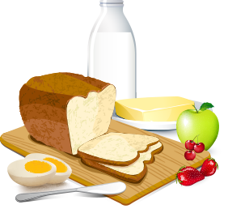

Corrección de las deficiencias en la alimentación
Con el fin de mantener la salud de músculos y cartílagos y evitar el catabolismo en los ancianos se indica una dieta donde se ofrezcan los más variados elementos nutritivos.
Factores como pérdida del apetito, del gusto, del olfato, daños a la salud bucal, saciedad precoz, factores socioeconómicos y medicamentosos conducen a una reducción de la ingesta alimentar en la persona de edad avanzada.
La Organización Mundial de la Salud (OMS) recomienda el consumo de una dieta rica en nutrientes con, por lo menos, 400 g de verduras y frutas, menos de 5 g de sal y un mínimo de 40 g de fibras, diariamente.
El consumo diario de proteínas indicado para adultos, es de 0,75 g/kg de peso corporal. De esta forma, una persona de 80 kg debe consumir 60 g de proteínas al día para mantener su estructura física, referente a este nutriente, en condiciones normales de salud.
